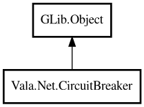

CircuitBreaker
Object Hierarchy:

Description:
public class CircuitBreaker : Object
Circuit breaker for protecting unstable dependencies.
CircuitBreaker guards expensive or unreliable calls and prevents cascading failures. After enough failures, it opens and rejects calls
immediately until timeout elapses.
Example:
var breaker = new CircuitBreaker ("payments")
.withFailureThreshold (3)
.withOpenTimeout (Duration.ofSeconds (10));
Result<string, string> result = breaker.call<string> (() => {
string? payload = fetch_from_remote ();
if (payload == null) {
return Result.error<string, string> ("remote returned empty payload");
}
return Result.ok<string, string> (payload);
});
Content:
Creation methods:
Methods:
Inherited Members:
All known members inherited from class GLib.Object
- @get
- @new
- @ref
- @set
- add_toggle_ref
- add_weak_pointer
- bind_property
- connect
- constructed
- disconnect
- dispose
- dup_data
- dup_qdata
- force_floating
- freeze_notify
- get_class
- get_data
- get_property
- get_qdata
- get_type
- getv
- interface_find_property
- interface_install_property
- interface_list_properties
- is_floating
- new_valist
- new_with_properties
- newv
- notify
- notify_property
- ref_count
- ref_sink
- remove_toggle_ref
- remove_weak_pointer
- replace_data
- replace_qdata
- set_data
- set_data_full
- set_property
- set_qdata
- set_qdata_full
- set_valist
- setv
- steal_data
- steal_qdata
- thaw_notify
- unref
- watch_closure
- weak_ref
- weak_unref